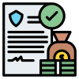
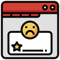
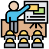
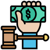

HOME > 정도경영 > 정도경영 프로그램
정도경영 프로그램
코카-콜라 음료는 사회와 고객으로부터 존경받는 기업이 되기 위해 다음과 같은 정도경영 프로그램을 운영하고 있습니다.
-
- 정도경영 운영체계
- 체계적이고 일원화된 정도경영 실천활동 전개를 위하여 정도경영 전담조직인 윤리사무국을 설치하여 교육·홍보 및 제보조사를 실시하고 있으며, 내부조직의 성과창출 및 경쟁력 제고를 위해 경영진단팀을 별도 운영하고 있습니다.
-
- 사이버신문고 운영
- 임직원들의 정도경영 위반이나 부정비리의 척결을 위해 신문고제도를 운영하고 있으며, 이를 통해 부정비리, 불합리한 제도, 업무 Process 등의 개선활동을 하고 있습니다.
-
- 정도경영 홍보활동
- 정도경영 뉴스레터 발송, Quiz 및 Event 실시 등 다양한 홍보활동을 통해 정도경영 조직문화 정착에 힘쓰고 있습니다.
-
- 정도경영 실천/부패방지 법규 준수 서약
- 전 임직원은 정도경영 실천서약과 부패방지 법규 준수 서약을 통해 LG윤리규범 준수 및 정도경영 실천을 다짐하고 있으며, 협력회사도 이 서약에 함께 참여하고 있습니다.
-

- 부정비리 포상제도
- 사업의 투명성과 책임성을 더욱 강화하고, 고객가치를 훼손하는 부정비리 행위를 근절하기 위하여 부정비리 신고 포상제도를 시행하고 있습니다.
-

- 성희롱 고충 상담
- 임직원이 성희롱 관련하여 상담 및 신고할 수 있도록 사내 인트라넷에 신고 채널을 운영하고 있습니다. (익명 신고 가능)
-

- 임직원 정도경영 교육
- 임직원 대상 직군별 직급별 교육은 물론 온라인을 통한 교육도 병행하여 전임직원이 주기적으로 정도경영 교육을 이수하고 있으며, 해외 사업장 임직원 및 협력회사 대상 교육도 진행하고 있습니다.
-
- 정도경영 Survey
- 임직원 및 협력회사 대상으로 매년 정도경영 Survey를 실시하고 있으며, Survey 결과를 교육,홍보 및 제도 개선을 위한 Idea 발굴에 활용하고 있습니다.
-
- 정도경영 사이트운영
- 임직원의 윤리규범 미숙지로 인한 위반 행위를 사전에 방지하기 위해 윤리규범 및 위반사례, 윤리상담센터 등을 담고 있는 정도경영 사이트를 운영하여 임직원이 정도경영에 대한 의문사항을 상시 해결할 수 있도록 하고 있습니다.
-

- 금품수수 신고제도
- 임직원은 이해관계자로부터의 금품 및 향응ㆍ접대 수수를 엄격히 금지하고 있으며, 불가피하게 금품을 수수하였을 경우 이를 정중히 거절하고 반환하도록 하고 있습니다. 반환이 불가능한 경우에는 금품수수 신고 절차에 따라 윤리사무국으로 신고 후 수수한 금품을 사회복지 단체에 기부하고 있으며, 직접 기부가 곤란한 경우에는 사내 경매를 통해 발생된 수익금으로 사회복지 단체를 지원하고 있습니다.